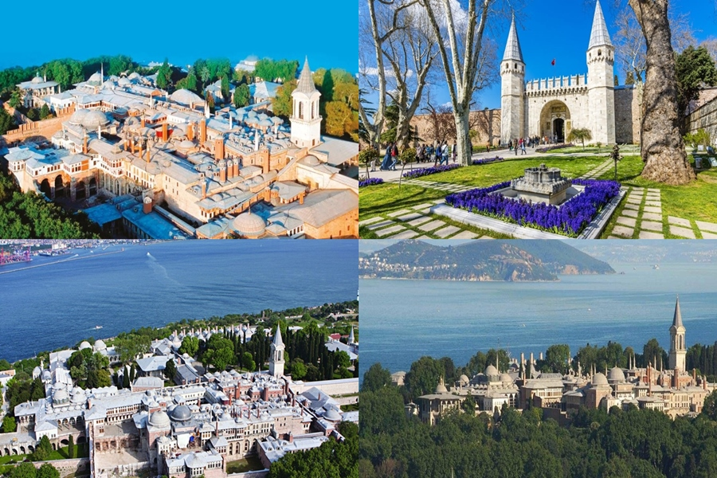

Görülmesi Gereken Harika Mekanlar
İstanbul'un tarihi ve turistik merkezlerini keşfedin. Bu mekanlara düzenlediğimiz turları "Turlarımız" sayfamından inceleyebilirsiniz.
1. Galata Kulesi

Haliç'i ve Boğaz'ı kuşbakışı izleyebileceğiniz, Cenevizlilerden kalan bu eşsiz kule hakkında ziyaret saatleri ve giriş ücretleri için: Müzeler Genel Müdürlüğü Sayfasında Aç
2. Kız Kulesi

Üsküdar açıklarında, denizin ortasında efsanelere konu olmuş bu şık kule hakkında detaylı bilgi ve ulaşım imkanları için: Müzeler Genel Müdürlüğü Sayfasında Aç
3. Topkapı Sarayı

Osmanlı padişahlarının yaşadığı, tarihe yön veren kararların alındığı ve zengin koleksiyonlarıyla büyüleyen bu saray hakkında detaylı bilgi için: Müzeler Genel Müdürlüğü Sayfasında Aç